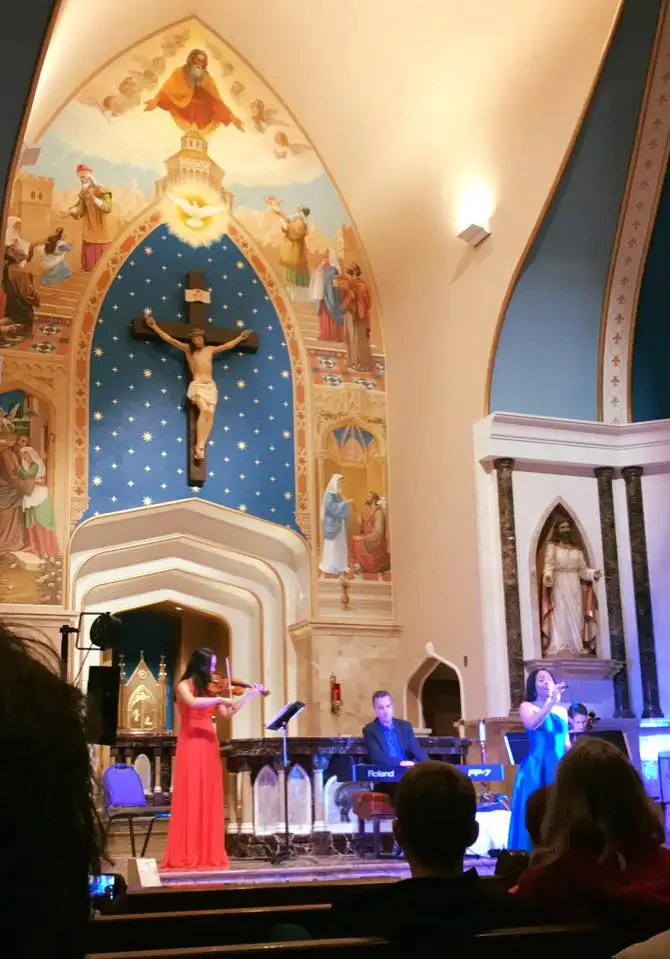

“You want to uplift humanity? Immerse them in beauty.”
Eric Genuis believes every student in America should have the chance to feel a violin in their hands, and learn how to use it. He feels this should be a requirement. He loves the idea of older student musicians mentoring younger ones, and a day when MTV lyrics won’t dictate what our children should think and feel.
Eric has known the effect good music can have on a soul, starting from his own in his youth, and leading to his current life as a professional musician with a heart to serve. In his ministry addressing the youth and incarcerated, he often goes into dank, lifeless, high-security environments where hope runs low. He enters with a couple of fellow classical artists, sits down for a spell and, if all goes well, gently woos them into a world of beauty; one many of them had never before experienced.
For instance, he recalls one time when a tattooed man with a checkered history, after hearing Eric’s group perform, told him he didn’t remember the last time he’d cried, not even when his family members died. While talking about his hardness of heart, he broke down sobbing like a little boy because…because why? Because of beauty. Eric denies that it was due to their talent. There’s no doubt they are talented, but Eric says it would be more accurate to pin the reason for this man’s sobbing onto the fact that something exquisite had reached his soul, maybe for the first time ever, or at the very least, for the first time in a very long time.
This is what Eric is after — to awaken the soul by presenting it with something true, good and beautiful, in the form of music.
“You want to uplift humanity? Immerse them in beauty,” he said recently, before a crowd of people gathered in my home parish of Sts. Anne and Joachim, in Fargo, North Dakota.

I first heard Eric back in April when he performed at a woman’s conference here that I helped plan. I was sitting near the stage when Eric and company began playing, and my mouth stayed agape pretty much the entire performance. I was absolutely captivated by their incredible musicianship, coupled with Eric’s touching stories, and the way he told them, with so much humility, honesty and grace.
This time, I just sobbed quietly through the whole thing, trying not to loose control. Even though many of the pieces and songs were the same, his company was different, though every bit as world class. I felt, all over again, that I could sit there forever. “Heaven must sound like this,” I thought.
Eric’s return trip was part of a tour in our area, and I was so happy that this time, a wider audience could enjoy his heart-gripping show.
Later, some friends and I talked about one of his newest songs, “Mercy.” Eric sets things up by explaining how the song came to be. He wrote it not because he understands mercy, he said, but because he is so lacking in it. He shared about a time he met a man who’d become estranged from his father. When he visited him on his death bed, the father, who’d been mostly unresponsive, jolted upright, and yelled, “Why are you here?!” And that was it; those were his last words to his son. Eric, gripped by the story, felt troubled, and said surely, he would not have responded that way.
But then he began thinking of the many people in his life he’d not forgiven, and how unworthy he was of the title “merciful.” Realizing his great lack, he said, “I might have done no better than that father, if in the same place. Oh, I might have said something different, but in my heart, I don’t know that I would have forgiven him.” Writing a song about the mercy that has proven so elusive to him was a way to ponder its power over and over again.
As “Mercy” was performed, my mind bounced around to different situations in my own life in which I yearn for mercy — either from others, or, even more, finding the grace to extend it to those I feel do not deserve it, because of how deeply they’ve hurt me. Mercy is a painful subject if you really think about it. It is not an easy word to grasp, nor to put into action. While it may seem like a light, cheerful concept at first glance, its reality is far from it. Eric owned up to that, and in doing so, he invited us all to do the same. And again, the tears came as I felt myself yearning to live differently and better.
I didn’t want to ruin the experience by having my phone up to my face the whole concert. So I caught only a few of the songs on video. This one, Eric’s rendition of, as he put it, “a 1,000-year-old poem” that has stood the test of time, “Ave Verum,” was among my favorites. (Okay, they all were!) I hope that at the end of this post, you will return here, click the link, close your eyes, and let the music bless you as it did us that evening.
Finally, one more comment about this event. It was a joy to experience Eric Genuis and his small but amazing ensemble back in the spring. But to see them performing not on a hotel stage, but on the altar of the Lord in my own parish — an altar I’ve also sung upon as a cantor — was an incredible experience. With the crucifix hanging above, reminding us of the origin of beauty, and the greatest symbol of love, everything felt in great harmony. My tears came, in large part, from the gratitude I felt for witnessing the creative genius of God at work in his children in a place that is a second home to me.
The world is hurting in so many ways. Sneaking out on a Monday night of a busy week to hear this stunning performance left me feeling refreshed and hopeful once again.
Q4U: What can you do this week to help begin lathering the world in beauty?